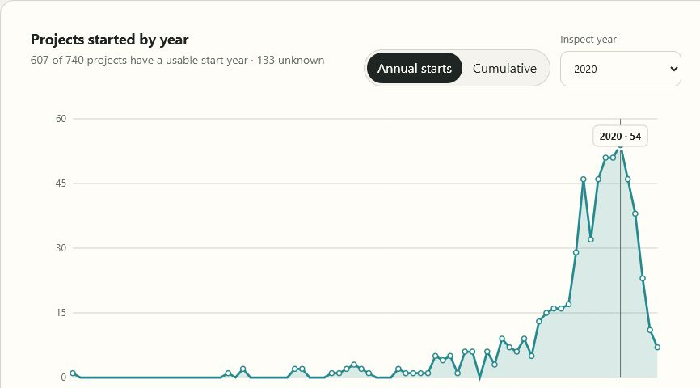
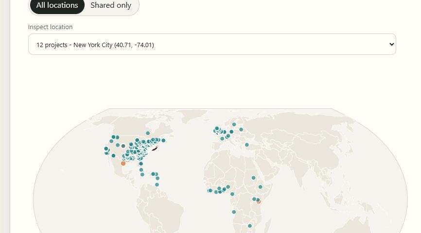
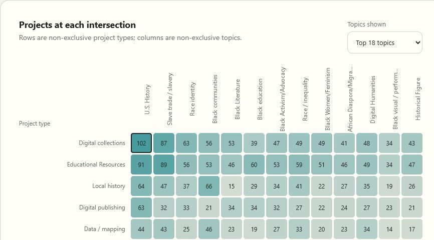
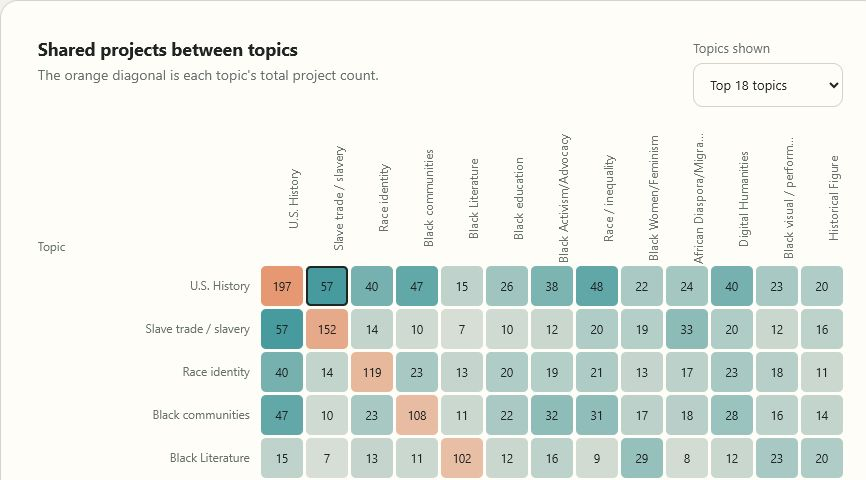
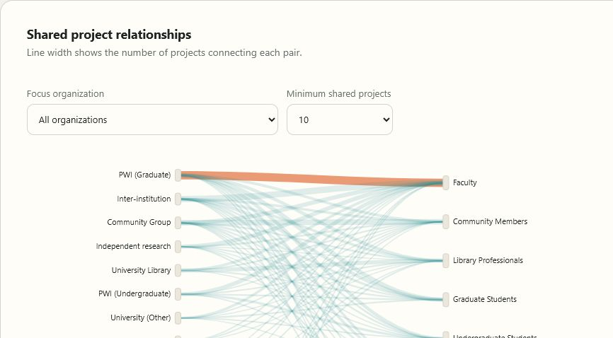
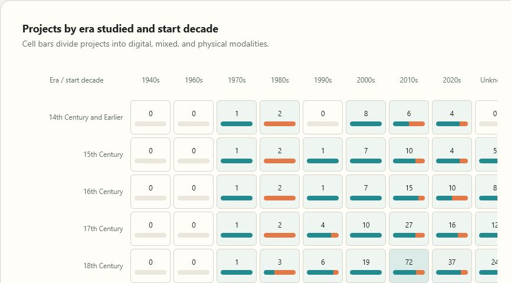
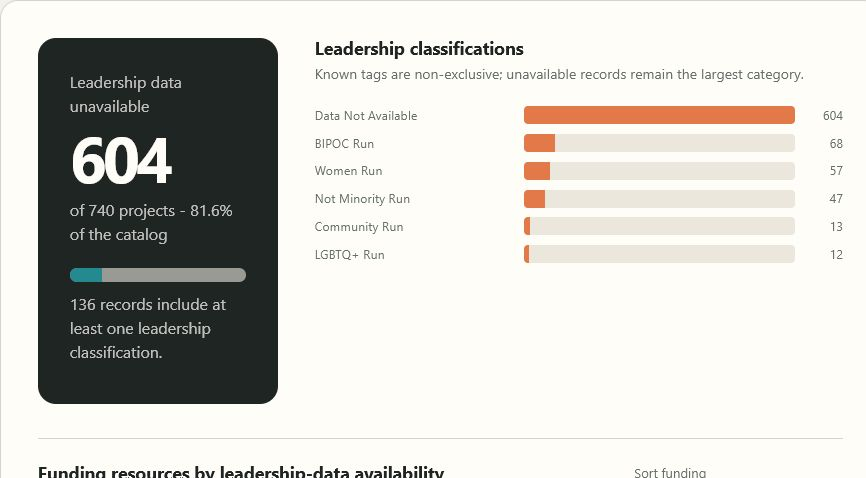

Timeline · stewardship
Portfolio health and growth
Explore when projects began, how the known catalog accumulated, and how recently projects were updated.
Visualization gallery
Seven interactive views of project growth, geography, subjects, institutions, participation, historical coverage, and stewardship.
Open data
Download the 740-project dataset or the exact aggregate data used to build the charts, maps, and matrices.

Timeline · stewardship
Explore when projects began, how the known catalog accumulated, and how recently projects were updated.

Geography · shared locations
Explore all 578 coordinate groups, including the 257 projects that share an exact point and the largest 12-project stack.

Formats · subjects
Compare 11 project types with 34 topics to find frequent combinations and comparatively quiet intersections.

Subjects · connections
Read a co-occurrence matrix of shared projects to see the strongest relationships among the catalog's topic tags.

Institutions · participation
Follow recurring relationships between 18 organization types and 11 contributor roles.

Historical coverage · modality
Compare historical eras with project start decades while retaining digital, mixed, and physical modality in every cell.

Resources · transparency
Compare funding resources with leadership-data availability while keeping all 604 unknown leadership records visible.